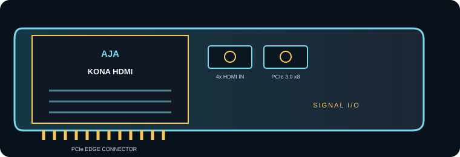

[ INDIVIDUAL COMPONENT // EXPANSION CARDS ]
AJA KONA HDMI
Multi-channel HDMI capture card for synchronized or independent HD/4K ingest workflows. This is a model-specific reference; verify the board revision and full specifications against the official sources before installation.

IDENTIFICATION: Match the silkscreen/model marking, part number, board revision and bracket to manufacturer documentation. Port direction, supported formats and driver behavior can vary by model revision and software release.
Capture, playback and compatibility specifications
| Exact model | KONA HDMI |
|---|---|
| Bus / host interface | PCI Express 3.0 x8; provide a compatible x8-or-wider host slot and adequate lane allocation. |
| Capture / playback interface | Four full-size HDMI inputs with eight-channel embedded audio. Ports 1–2 are HDMI 2.0; ports 3–4 are HDMI 1.4b. This is an input/capture card with no SDI input. |
| Resolution and frame-rate envelope | AJA specifies simultaneous capture of two 4K/UltraHD or four 2K/HD HDMI sources, with supported modes up to 50/60p. Available mode depends on connector generation, source timing and channel combination; do not assume four simultaneous 4K inputs. |
| Pixel format and codec handling | AJA lists RGB 4:4:4 up to 12-bit and YCbCr 4:2:2 up to 10-bit, with high-frame-rate workflows; HDMI carries video/audio, not a file codec. ProRes, DNx and other file codecs are encoded by supported host software. |
| Host compatibility | Requires AJA Desktop Software plus a compatible capture application/SDK. Windows, macOS and Linux support and simultaneous-channel configurations depend on the installed driver release. |
| Limitations and installation checks | HDCP-protected HDMI sources are not an ordinary capture source; protected content is unavailable to capture. HDMI cable quality, EDID/timing, source color format and aggregate PCIe/memory bandwidth constrain results. It is capture-only; it does not provide SDI or a standalone hardware encoder. |
Integration notes and limitations
- Measure available PCIe lanes and sustained host/storage bandwidth; mechanical slot length alone does not guarantee the electrical link width needed by the card.
- Confirm that source timing, signal standard, cable, reference, pixel format, channel mapping and software configuration agree before recording or playback.
- Record driver/firmware versions, operating system, application, breakout/accessory part numbers and tested mode. Update only with a recovery plan for mission-critical rigs.
- HDCP-protected HDMI sources are not an ordinary capture source; protected content is unavailable to capture. HDMI cable quality, EDID/timing, source color format and aggregate PCIe/memory bandwidth constrain results. It is capture-only; it does not provide SDI or a standalone hardware encoder.
For codec planning, distinguish a video transport/interface and raw pixel format from a compressed media-file codec. A supported capture application may encode a file format that the card itself does not encode.
Manufacturer sources and support
- AJA — KONA HDMI manufacturer technical/product informationProduct-line technical reference; consult the exact model format and interface table for the required mode.
- AJA — AJA KONA HDMI support and downloadsOfficial support, driver or release-note resource; operating-system and software compatibility can change by release.
Manufacturer documentation for the precise hardware revision takes precedence over generic workflow or family-level guidance.